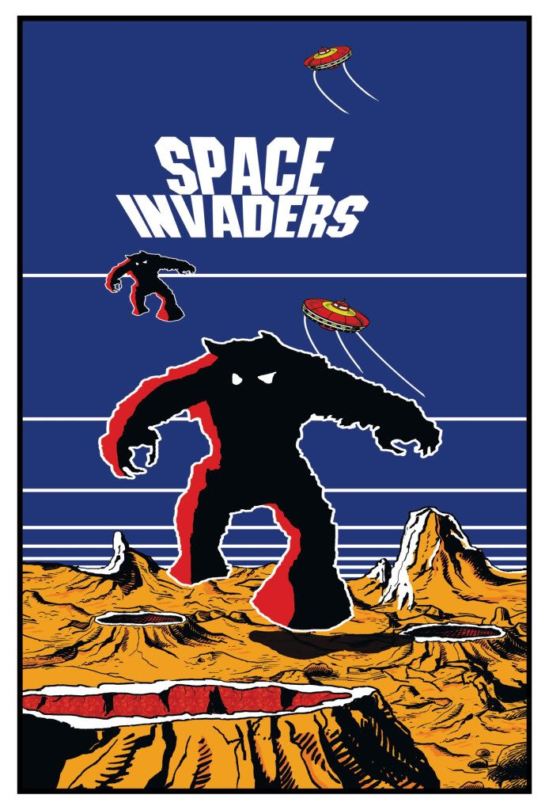
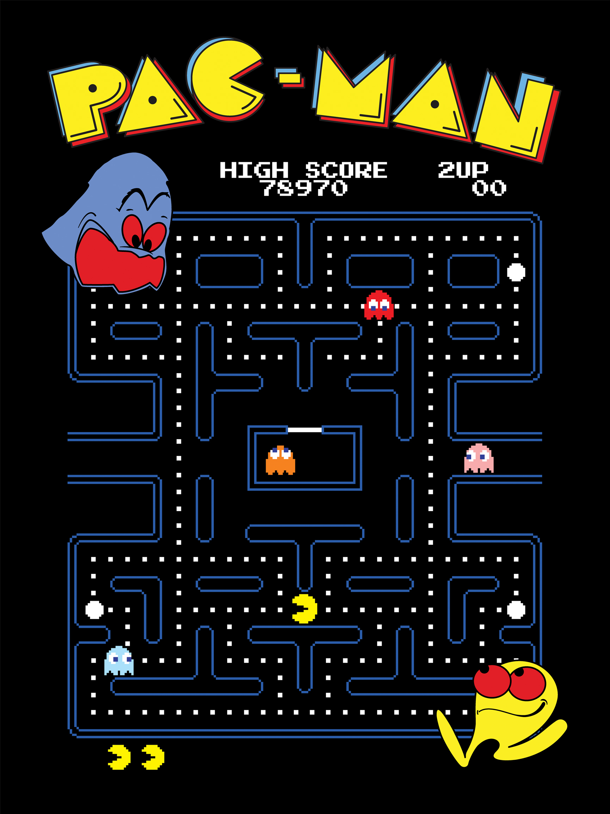
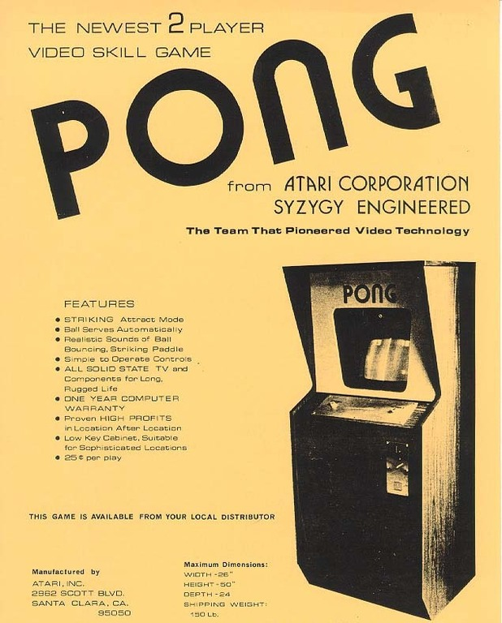
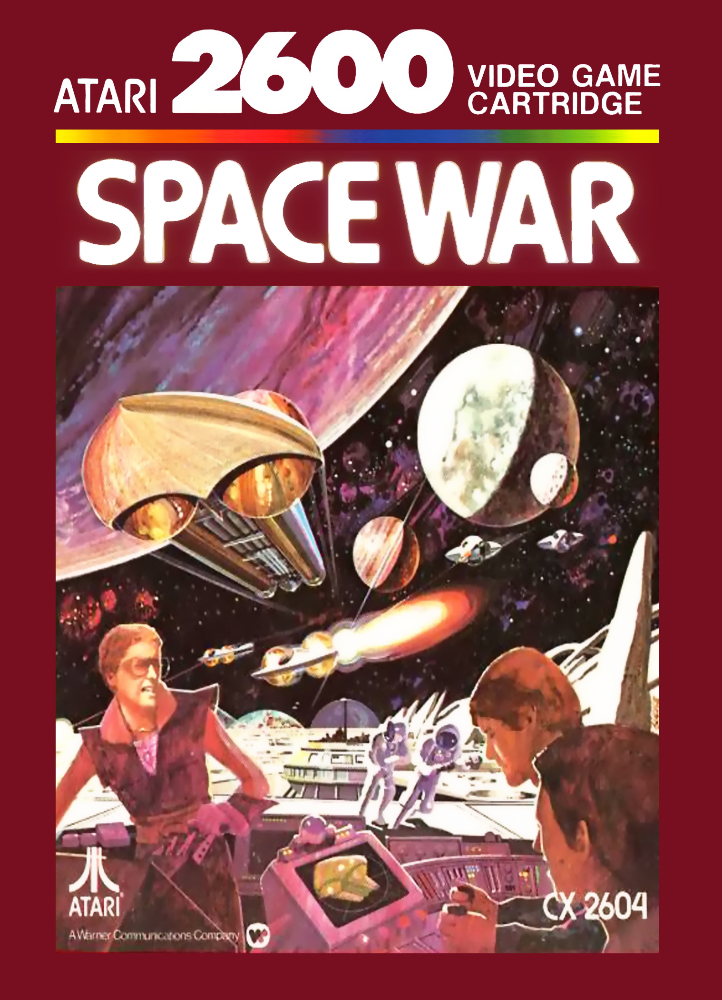
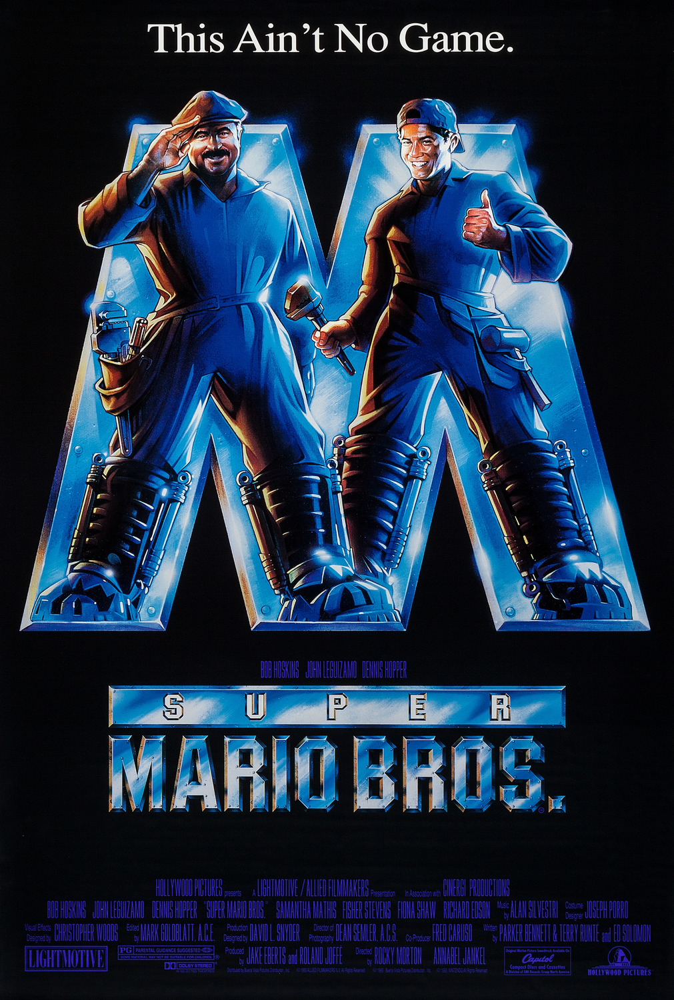
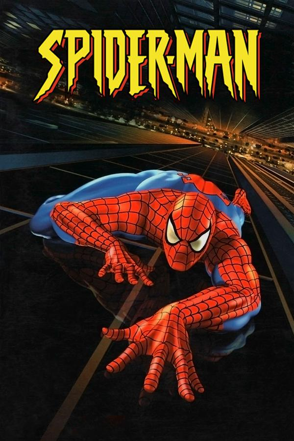
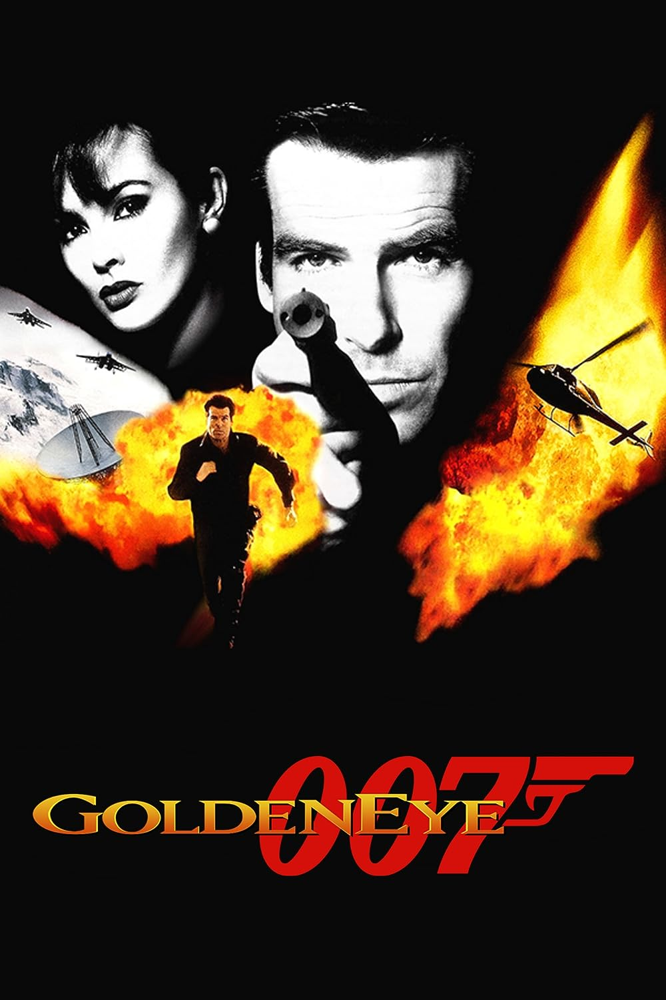

← Click For Info
A Brief History of Video Games
What are video games?


Video games are captivating and immersive digital forms of entertainment experienced across various platforms, including computers, consoles, smartphones, and handheld devices. These interactive diversions engage players through a compelling combination of visuals, audio, and interactivity, allowing them to assume roles, control in-game characters, and explore virtual landscapes. Each game features its unique rules and objectives, spanning genres like action, adventure, strategy, and simulation, offering a diverse range of experiences. The integration of high-quality graphics, animations, and sound effects enhances immersion and emotional connection. Player agency is a core element, as gamers make choices with consequences that shape the game's narrative or challenges. Video games have evolved from basic pixelated experiences to intricate, narrative-driven adventures, establishing themselves as a prominent aspect of contemporary culture, attracting a global audience for entertainment, competition, social interaction, and even educational enrichment.
Posters- The games Space Invaders & Pac-Man. The two classics from the golden era.
How long have they been around?




Video games have been in existence for over half a century, with their origins dating back to the early 1950s. The journey began with rudimentary experiments in computer science and technology, evolving gradually into more recognizable forms of interactive entertainment during the 1970s and 1980s. Pioneering titles like "Pong" and "Space Invaders" emerged as arcade classics, capturing the imagination of players worldwide. The 1980s also saw the rise of home gaming consoles like the Atari 2600, introducing video games to a broader audience. The subsequent decades witnessed rapid advancements in graphics, sound, and gameplay, leading to the development of iconic franchises like "Super Mario," "The Legend of Zelda," and "Final Fantasy." The 1990s marked the transition to 3D graphics and the birth of immersive 3D environments in games like "Super Mario 64" and "Quake." As technology continued to advance, the 21st century brought about an explosion of gaming platforms, from powerful consoles to mobile devices and online gaming communities, cementing video games as a dominant force in global entertainment and culture.
Posters- The games Spacewar! & PONG!. The two earliest known video games.
The Influence of Video Games
Video games have wielded a profound and multifaceted influence on society and culture. Their economic impact is undeniable, as the gaming industry has burgeoned into a multi-billion-dollar powerhouse, catalyzing job creation, technological innovation, and investments across various sectors. These games have also become a cornerstone of popular culture, with iconic characters and music that resonate globally, while franchises have transcended gaming into books and television. Additionally, video games have revolutionized social interaction, fostering global communities through online multiplayer gaming, and elevating competitive esports to mainstream prominence. Streaming platforms like Twitch have transformed gaming into a spectator sport, captivating millions. Moreover, video games have found utility in education, improving problem-solving skills and enriching learning experiences through gamification. In essence, video games, once rudimentary pixelated pastimes, have evolved into influential cultural forces, shaping economies, entertainment, social dynamics, and education, leaving an indelible mark on the modern world.
Posters- The companies, Epic Games (left) & Rockstar Games (right). These studios earn in billions and give out the highest employment for people to work. These are the giants.
Movies Made on Video Games

Movies adapted from video games have become a prominent genre in the film industry. These adaptations aim to bring beloved gaming narratives and characters to the big screen, often with mixed results. While some have achieved success, such as the "Resident Evil" series and "Mortal Kombat," many have faced criticism for failing to capture the essence of the source material. The transition from an interactive medium to a passive one can be challenging, as filmmakers must balance the expectations of dedicated fans with the need to create a compelling cinematic experience. Additionally, video game adaptations have struggled with issues of fidelity to the original story, character development, and finding the right tone. Despite these challenges, the allure of tapping into established gaming fan bases and the potential for box office success continue to drive Hollywood's interest in adapting video games for the silver screen. As technology advances and storytelling techniques evolve, the future may hold more successful adaptations that bridge the gap between these two forms of entertainment, providing fans with an even more immersive experience.
Posters- The movies, Super Mario Bros. & Mortal Kombat. These movies never reached their true potential and were not loved by their own fanbase. They remain to serve as a reminder of how NOT to make movies based on video games.
Video Games Made on Movies


Video games adapted from movies, often known as "movie tie-in games," represent a common trend in the gaming industry. These games seek to capitalize on the popularity of films by offering players an interactive way to engage with the movie's storyline or world. While some movie tie-in games have effectively captured the essence of their cinematic counterparts, receiving acclaim for their gameplay, storytelling, and visuals, many have faced challenges, including rushed development, limited budgets, and the need to closely adhere to the movie's plot, which can restrict creative freedom. Consequently, some of these games have been criticized for falling short of expectations or feeling like mere attempts to cash in on a film's success. Nevertheless, the allure of bringing beloved movie franchises into the gaming realm endures, as well-executed adaptations offer fans a chance to immerse themselves in their favorite cinematic universes, expanding the entertainment experience beyond the silver screen. With advancements in technology, some movie tie-in games have successfully harnessed the capabilities of modern gaming platforms, blurring the boundaries between film and interactive entertainment.
Posters- The games Goldeneye 007 & Sam Raimi's Spiderman. These games served as a way to provide the consumer a medium to interact with the movies at a higher level.